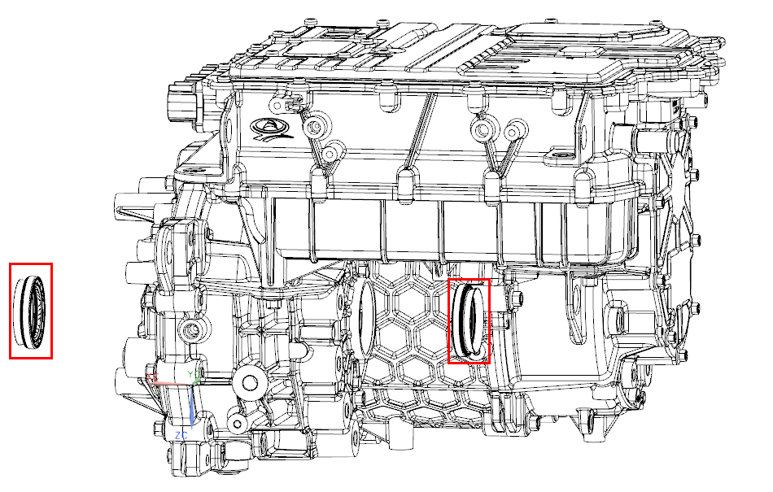
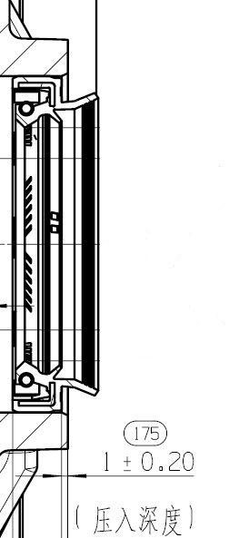

|
№ |
Операционные процессы |
Требования к сборке |
Инструмент / Вспомогательные материалы |
Меры предосторожности |
|
1 |
Извлечение сальника дифференциала |
Использовать отвертку и другой Инструмент для извлечения сальника дифференциала; в процессе извлечения Инструмент не должен поцарапать внутреннее отверстие Установка сальника. Точное положение сальника дифференциала показано на рисунке ниже.  |
Отвертка |
Внимание: защищать корпус от повреждений |
|
2 |
Очистка |
Очистить начисто стенку отверстия сальника и Торец отверстия сальника. |
||
|
3 |
Установка сальника дифференциала |
Нанести небольшое количество смазочного масла на внешнее кольцо нового сальника, использовать приспособление для сборки сальника дифференциала для выполнения сборки; при сборке сальника обратить Внимание на защиту кромки, убедиться, что внешнее кольцо сальника не срезано и не перекошено. Точное положение Торец сальника и Торец корпуса показано на рисунке.  |
Вспомогательное приспособление для сальника дифференциала |
При сборке приводного вала необходимо обеспечить соосную сборку приводного вала и сальника дифференциала, чтобы предотвратить повреждение сальника приводным валом |
|
4 |
Подтвердить |
После Установка приводного вала проверить прилегание пылезащитной кромки сальника к грязеотражательному кольцу приводного вала (пылезащитная кромка должна быть полностью закрыта грязеотражательным кольцом, без загибов). |
||
|
5 |
Проверка |
Выполнить пробную поездку на автомобиле в течение 3 km, загнать автомобиль на подъемник, проверить и Подтвердить отсутствие утечек масла в месте Установка сальника дифференциала. |
||
|
Если другие неисправности отсутствуют и требуется только замена сальника дифференциала, то замену сальника можно выполнить непосредственно на автомобиле, сняв только приводной вал, без необходимости отсоединения системы электропривода в сборе от автомобиля. |
||||